Case study · Website · UI/UX
Redesigning the website for SOMA
SOMA is a sci-fi horror game by Frictional Games, an unsettling story about identity, consciousness and what it means to be human. I redesigned its website to make it clearer to navigate and more compelling, on desktop and mobile.
- Role
- UX & UI Designer
- Scope
- Website, desktop & mobile
- Focus
- Navigation, hierarchy, appeal
- Type
- Concept project
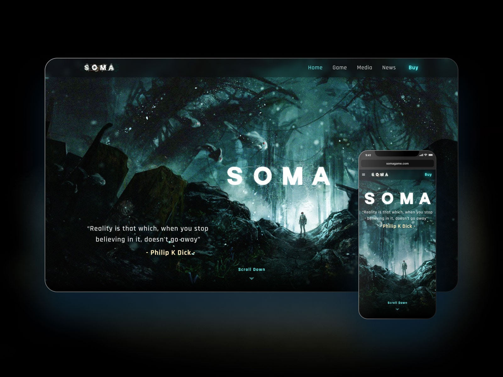
01 — Overview
Redesign the experience of the website.
SOMA is a sci-fi horror game from Frictional Games, the creators of Amnesia: The Dark Descent. My mission was to rethink how the website presents the game: how information is organised, what a visitor sees first, and how smoothly they are guided from curiosity to purchase.
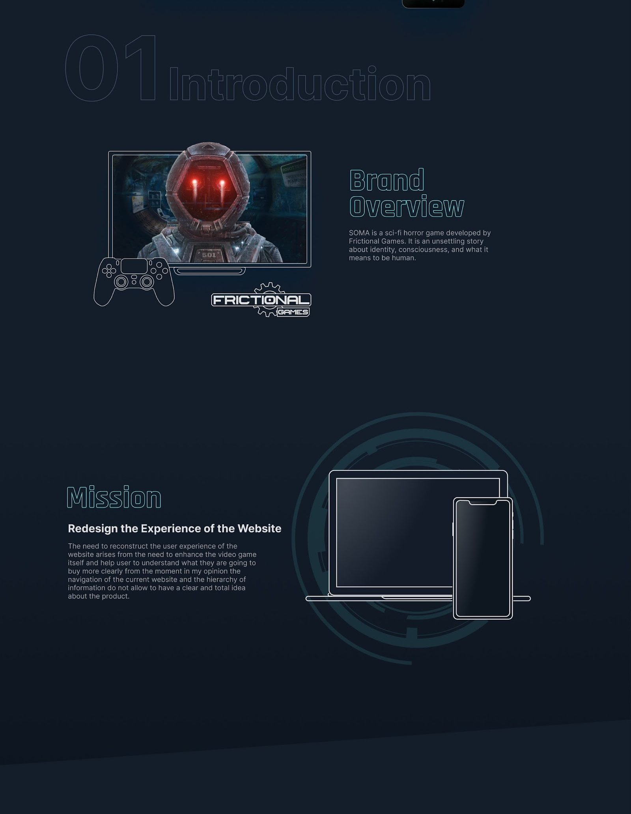
02 — Problem
Information was hard to reach, and the mobile experience was missing.
Reviewing the existing site at somagame.com, I found three main pain points:
- No clear hierarchy. The undefined structure makes it difficult to find the information needed to understand the product.
- Purchase before curiosity. The home page prioritises buy links over information, assuming visitors already know the game.
- Not responsive. Mobile support was practically absent, cutting out everyone who visits from a smartphone.
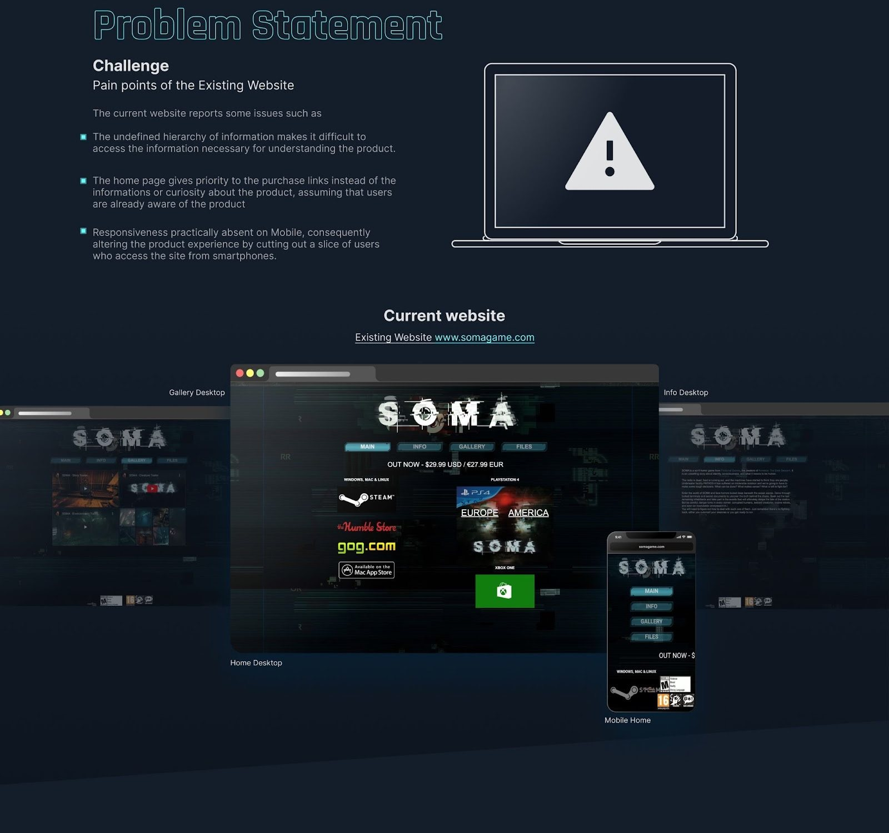
03 — Goals
A single guided journey: attract, inform, show, buy.
I reorganised the content into four steps that map to the way a first-time visitor thinks. The home screen attracts, the game section informs, media shows the world, and the purchase section closes the journey.
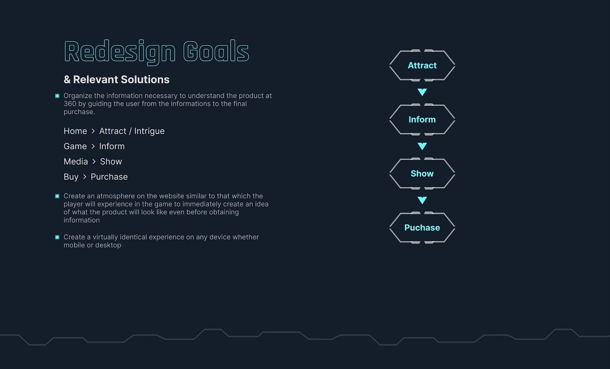
04 — Style guide
Cold, tense and readable.
Rajdhani gives headings a technical, sci-fi voice while Roboto keeps body text easy to read. The palette is built on deep blue-black, with cyan highlights and warm accents used sparingly for calls to action.
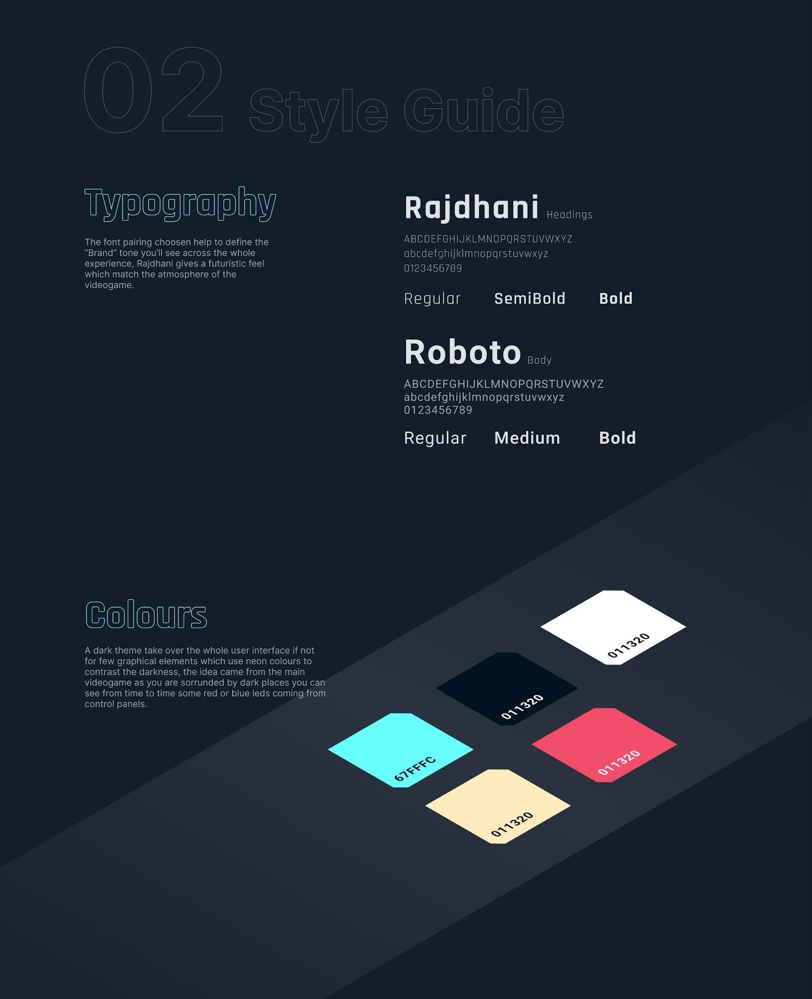
05 — Process
Starting from the person, then the flow.
I began with a proto persona: Walter, 27, a student who loves story-driven games and wants as much information as possible before buying. From him I mapped two key tasks, getting an overview and buying the game, and reading news about the game or company. Those became a user flow for the whole site.
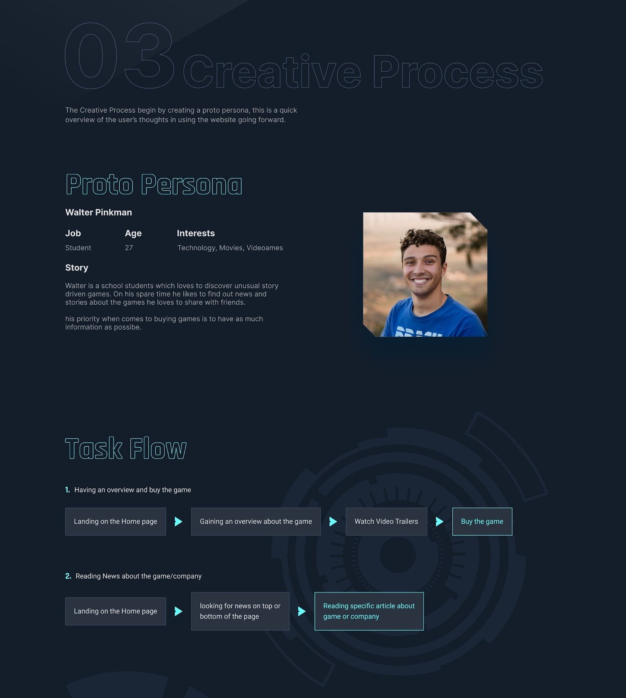
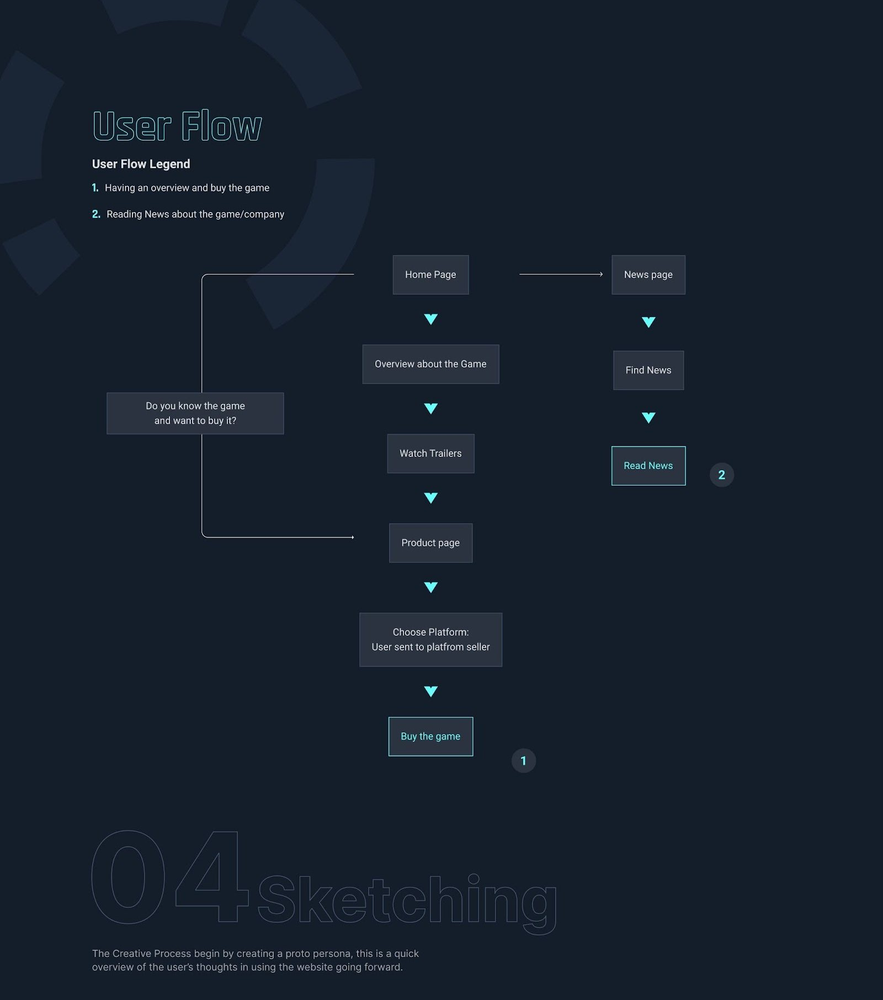
06 — Sketching
Sketches and low-fidelity wireframes.
Rough sketches let me test the single-page structure quickly before committing to visual detail.
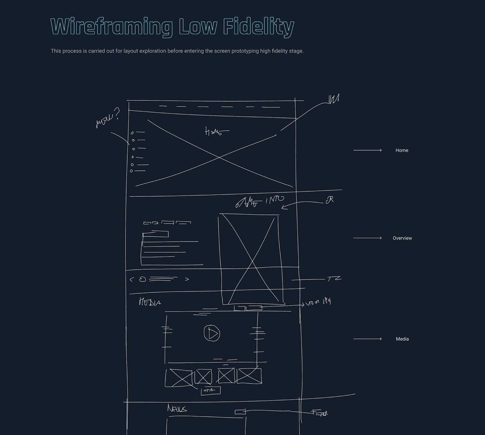
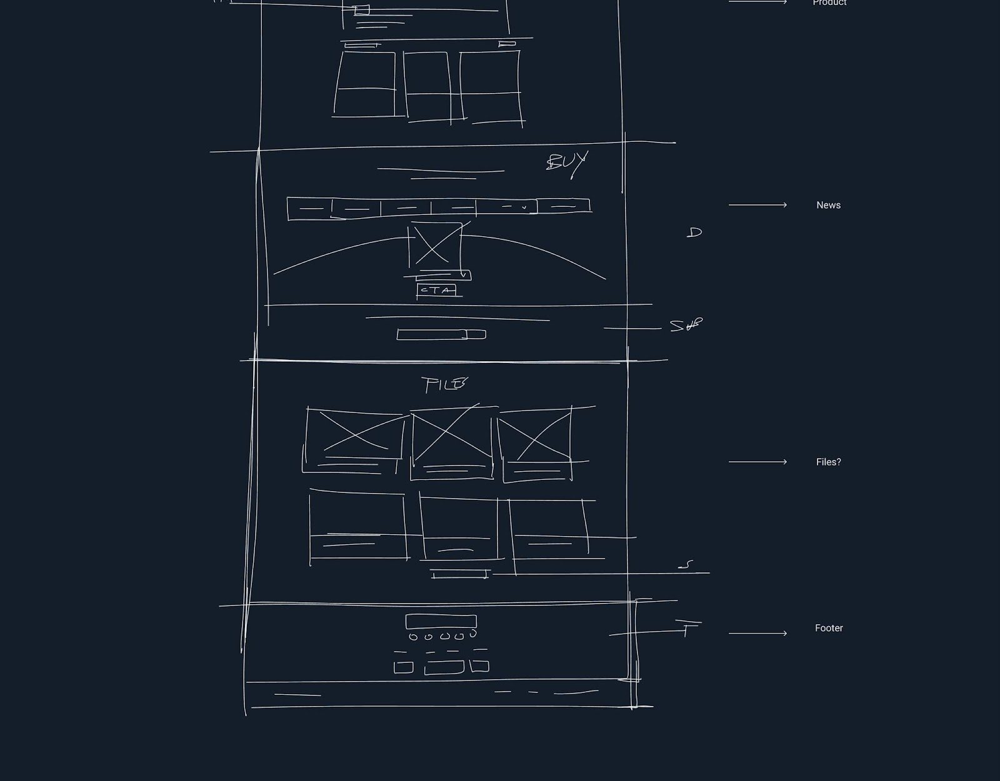
07 — Prototype
High-fidelity design.
The final desktop design is a single scrolling page that runs from the opening hero through the game, media and news to the purchase section.
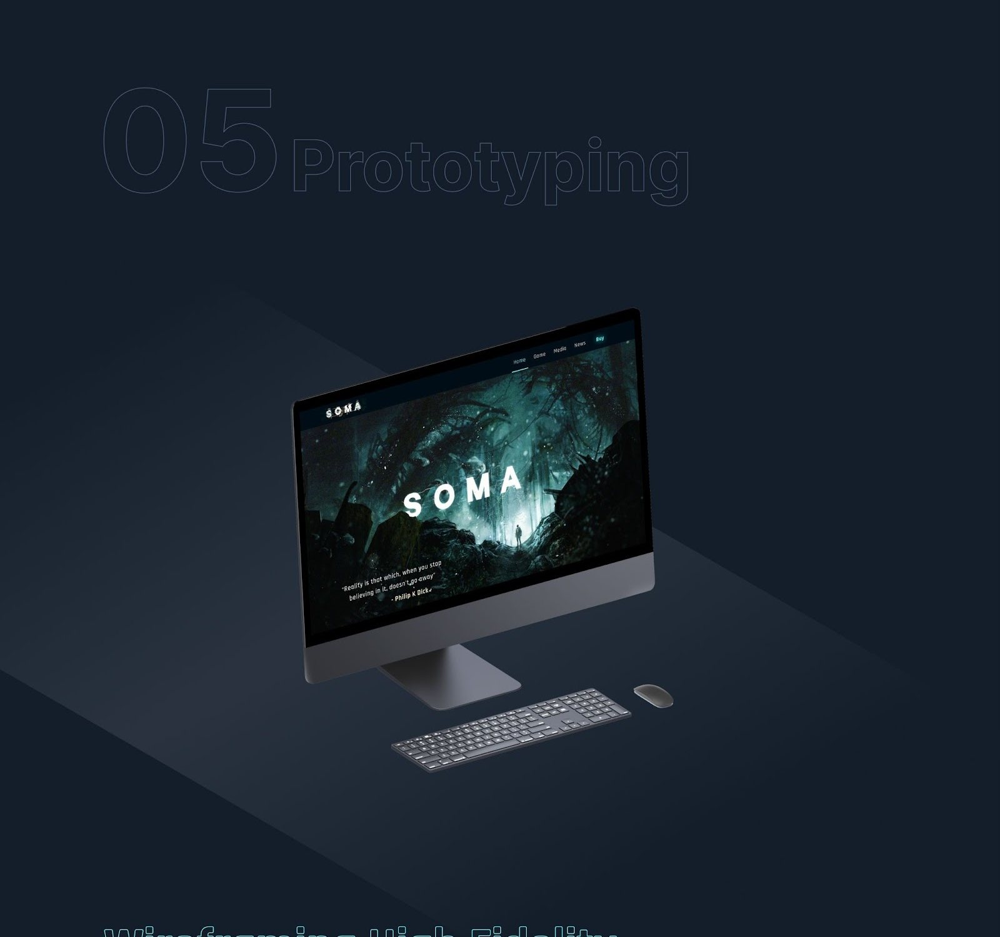
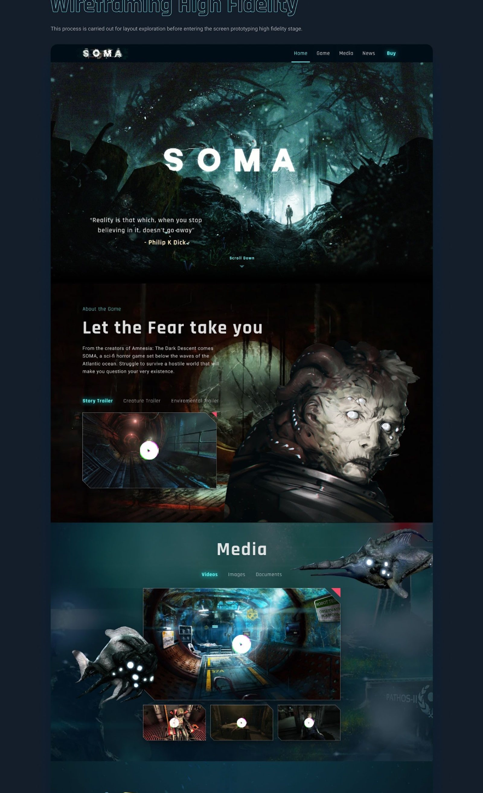
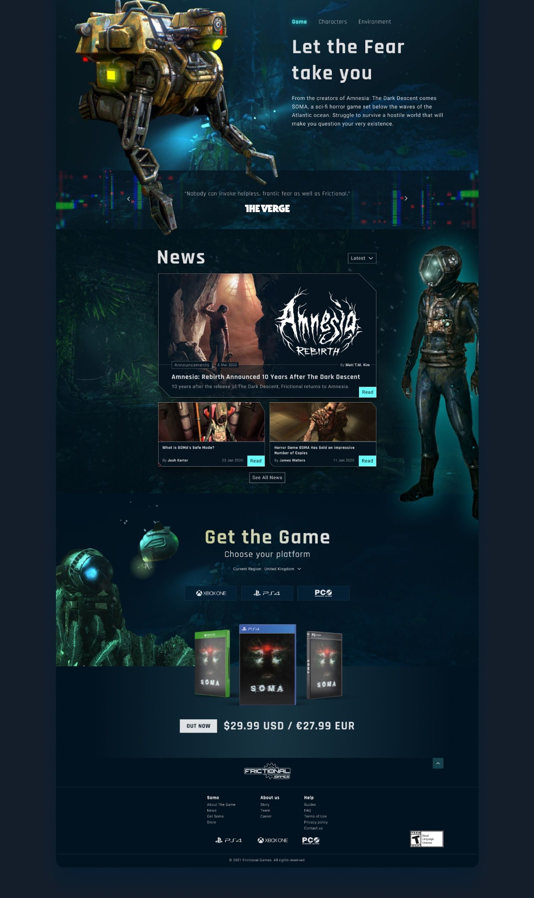
08 — Mobile
The same structure, adapted for small screens.
The mobile version follows the desktop structure so the journey feels familiar on any device.
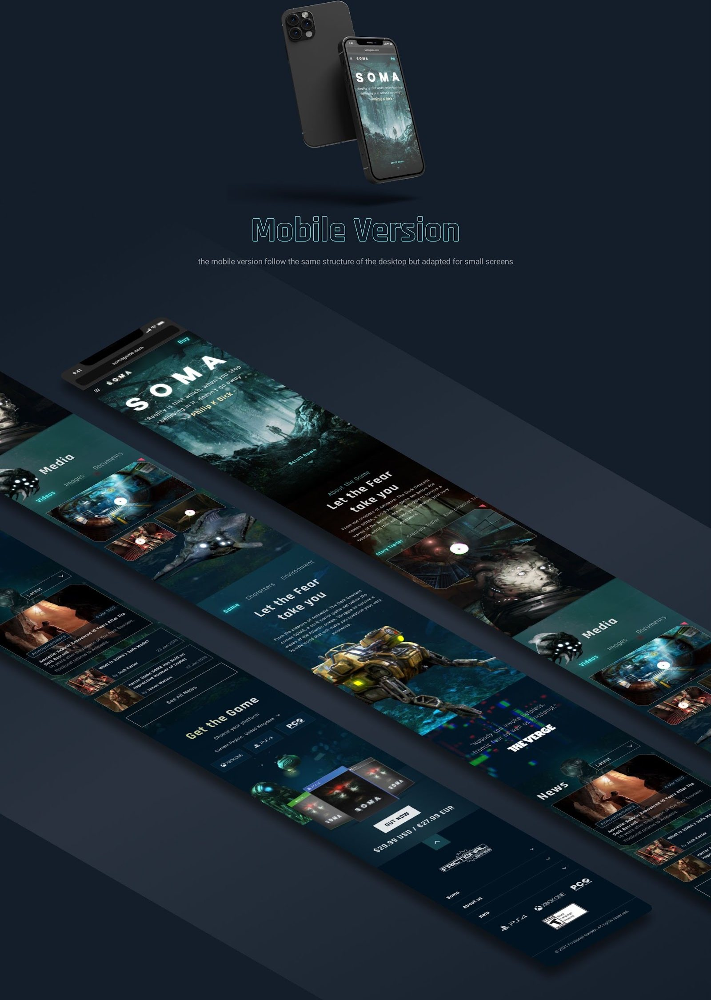
09 — Final thoughts
A continuous, guided experience.
The project came from a need to organise information more clearly and guide users through the site. Moving to a single page gives a continuous journey from the beginning (Home) to the end (Buy). Finding illustrative material was the hardest part, but the general experience of absorbing information and understanding the product is much clearer.
Tools: Figma, Adobe Photoshop, Adobe Illustrator.